四月二十四日 (日)
Cappadocia 嘅最後一日。
朝早又係行山，由睇日落嘅山頂行去落 Gorkundere Valley 再轉去 Zemi Valley，Zemi Valley 其實風景冇乜嘢，反而由山頂落 Gorkundere Valley 就見到一支支大石。之後去睇睇 Nazar Church，要入場費，行到埋門就突然有個人由遠處行過嚟，心諗呢個人係咪成日都守住嘅呢。
喺 Zemi Valley 沿著條路行，風景比起其他地方變得普通，而且也是在谷底行，其實是不是又要上谷頂行才對的？但我很懶，就這樣算，發覺這谷不尋常地滿是蝴蝶和蜜蜂，我第一次見有這麼多的蝴蝶。
一個上午就這樣過去，行回去主要車路，見到一間店，吃了即製的芝士菠菜 pancake，芝士是 Tulum 土耳其芝士，又是吃不完打包。見到有掛滿 nazar 的樹，可以掛 nazar 上樹許願。Nazar 即是那些藍色眼的東西，是用來保護自己，免於 evil-eye 的傷害。土耳其家家戶戶都掛著。
下午搭車去 Ürgüp，去 Ürgüp 本來是想看那些一支支像金菇的石，但車去到 Ürgüp octogar 沿路都看不見，去到市內又不覺有，反而去了博物館和舊城，即又是那些石山中的洞屋區。吃吃這裏出名的雪糕，土耳其不是所有雪糕都是那些黏著又要玩你一輪才賣給你的，只要不是穿著特別制服的那些便行。
去博物館經過的街道，發覺很多店店外都放著一瓶瓶啡色的東西，像是用來煮食物的。又見到一間好特別的工藝店，賣的工藝紀念品，不是平時周街的紀念品店都賣著一式一樣那種，是他們自己設計和製造，就買了一些。
Ürgüp 的博物館好細，不過有些古時大形動物骨的化石，以及用這裏不收費的 WC。因為土耳其的公廁都收 0.5 - 1 TL。博物館外的公園，少年坐著彈結他唱歌。
上舊城旁的小山山頂看風景，又在舊城的洞屋行，這裏的洞屋我覺得特別危險，不知道是不是因為聽過 green tour 導遊說這些石都會自自然然倒塌，就特別留意，看到很多很多的裂逢，好像大力一點都會震下來似的。
在一間叫 SOFRA 的餐廳吃，就叫了那個 Testi Kebab (Pottery Kebab)，一些菜和肉放在一個用麵包封口的陶壺來煮，煮好就拿出來在客人面前劈開壺口，倒裏面的菜、肉、湯出來。好好食。
吃完老闆坐過來傾偈，談了很久和很多東西，說到難民，他很不喜歡，說那些人根本不是難民，又不當土耳其為家，只想用來跳去歐洲，身為穆斯林卻去不同宗教的地方，而不去其他伊斯蘭教的地方，他又責罵那些富裕的伊斯蘭地方如沙地不收容這些人。
說到 Kurds 庫爾德人，就說很喜歡，是好人，然後我說我今晚去 URFA，他說 URFA 好好。和土耳其西面的人很不同，那裏的人全都叫我不要去。
談了個下午，回去 Göreme，到 mum’s meal 那裏買點自家製曲奇到巴士吃，七時在 octogar 等車，一部小車來載我到 Nevşehir 轉大巴。
在巴士上不懂關閉前面的小形電視，一位當地人教我，原來是要按著個開關數秒才行。巴士坐滿人，好熱鬧，感覺好多都衣著不同了，包頭或全身蓋著的人多了。半夜巴士如常在一些城市 octogar 停車，我感覺這裏開始，濕度高，而且比較髒了。
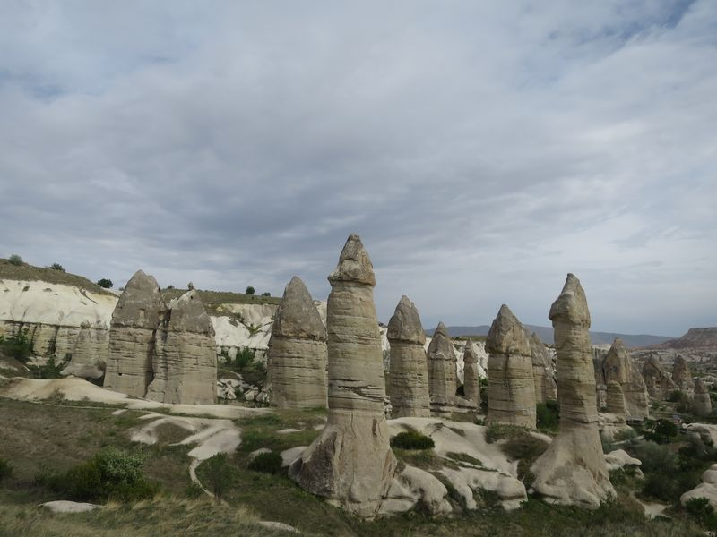
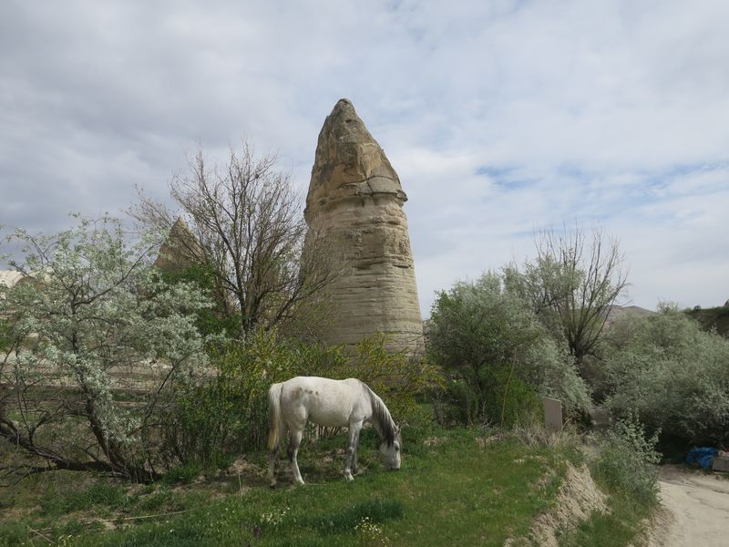
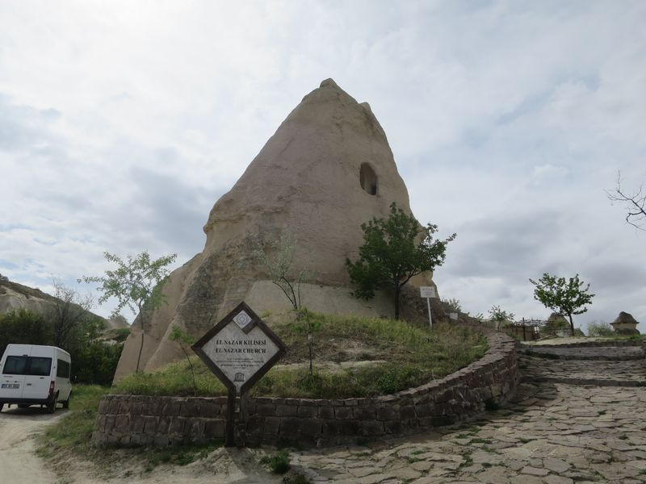
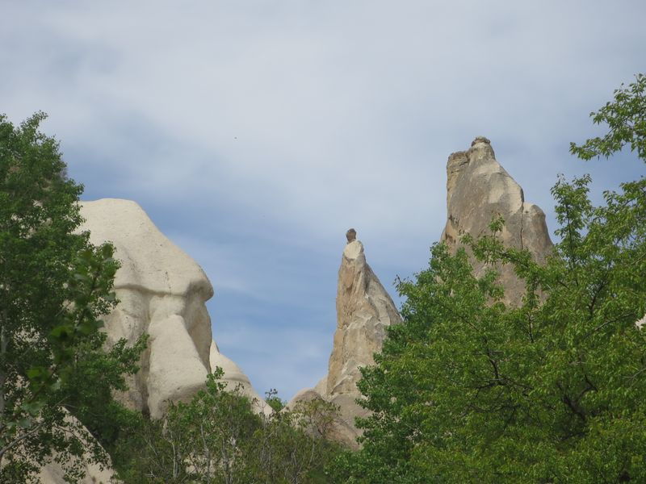
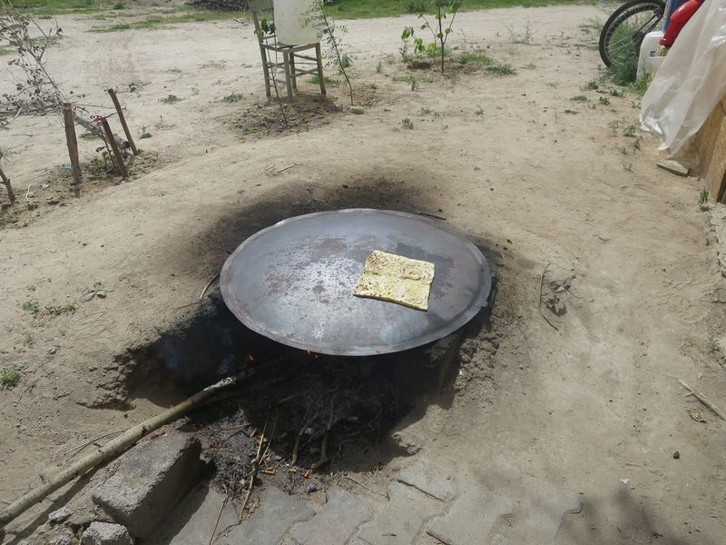
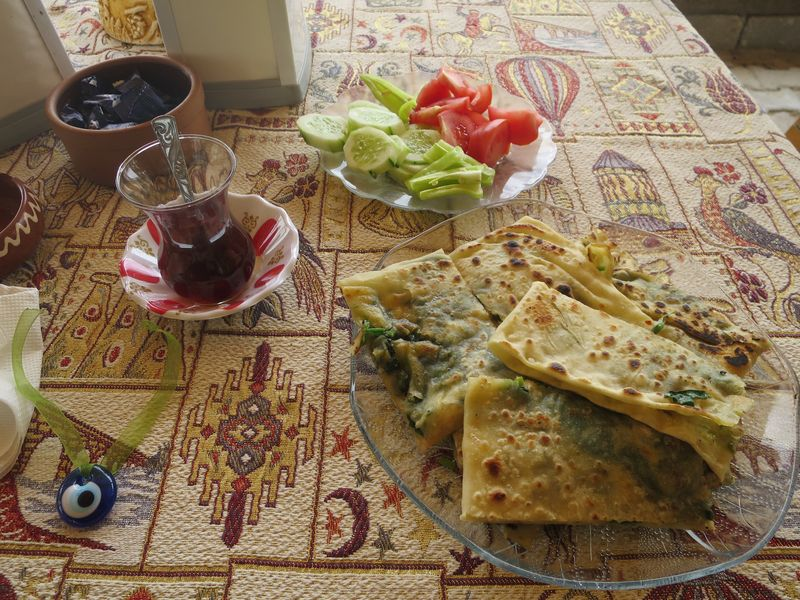
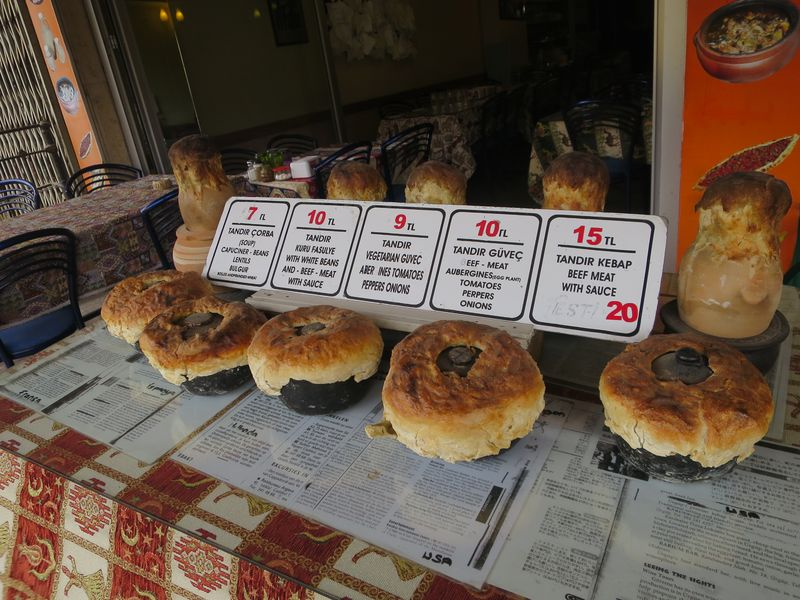
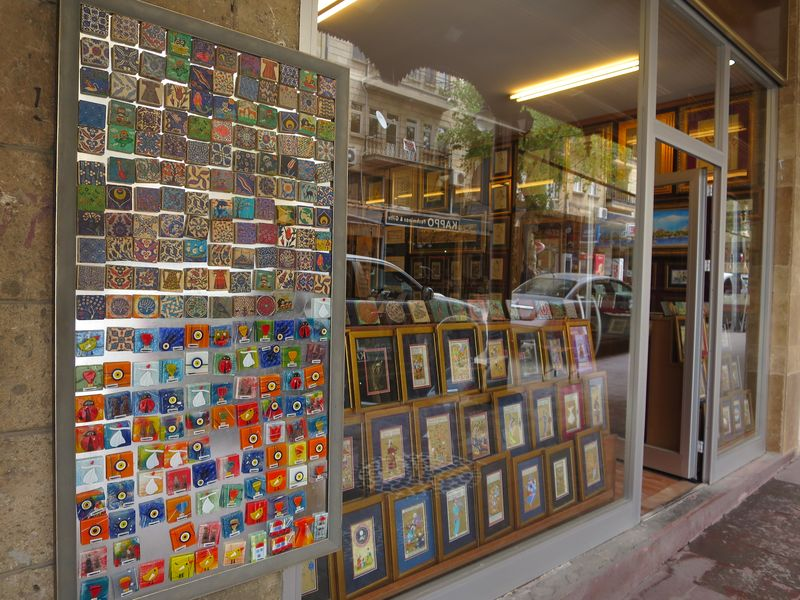
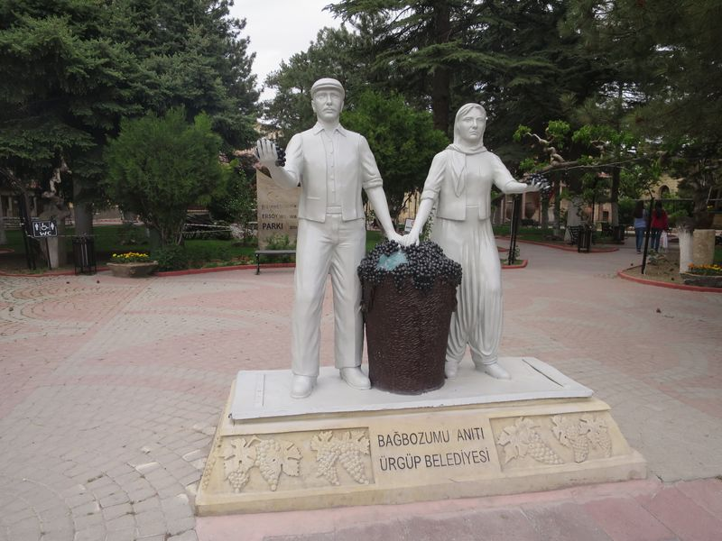
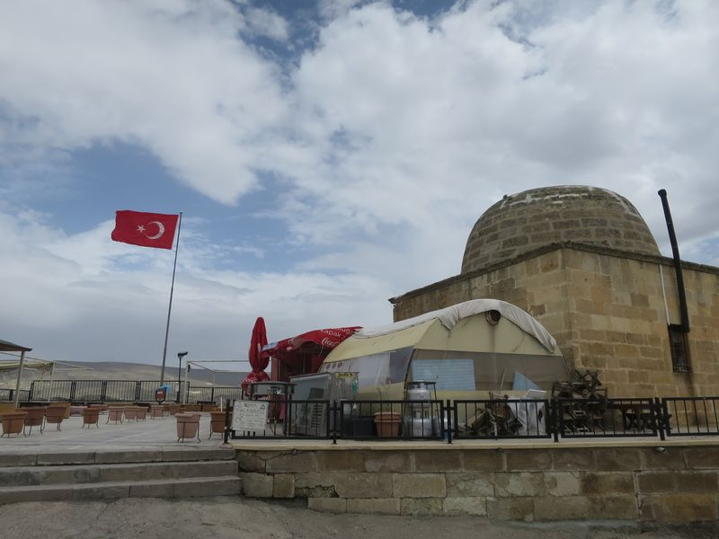
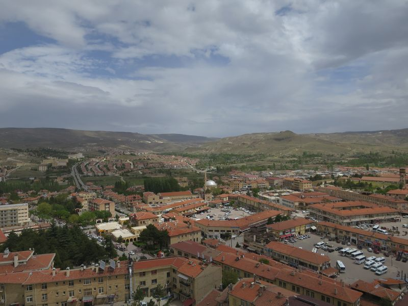
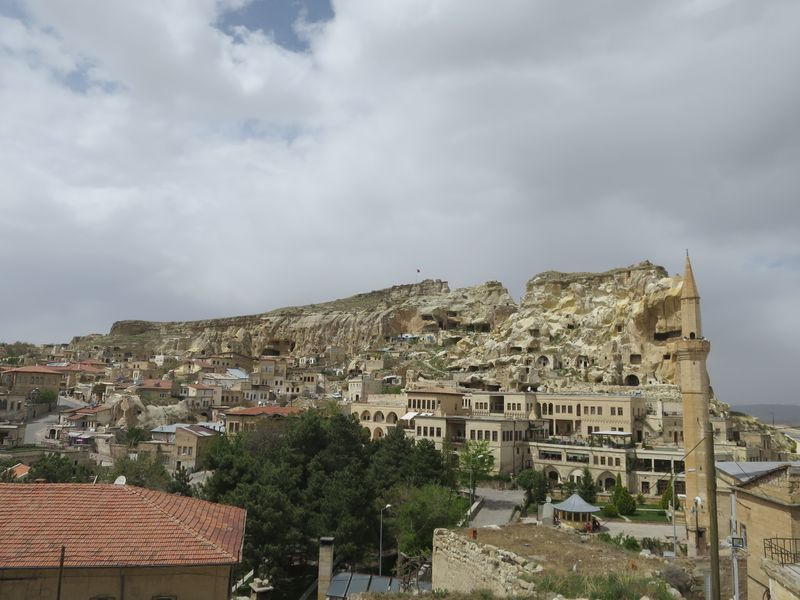
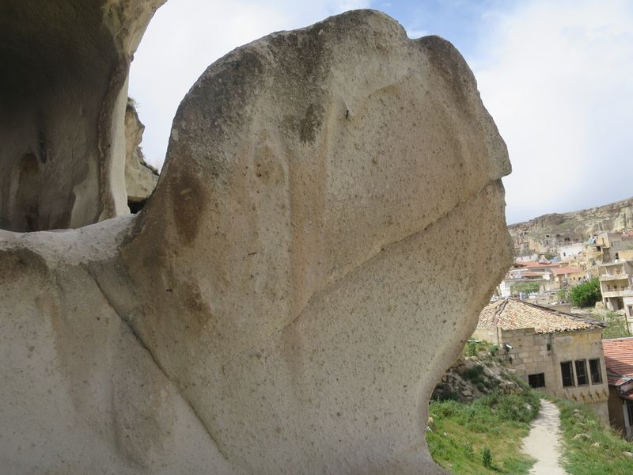
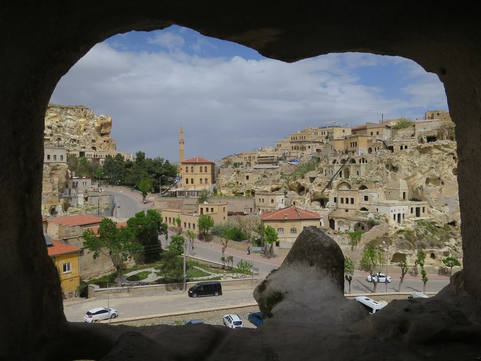
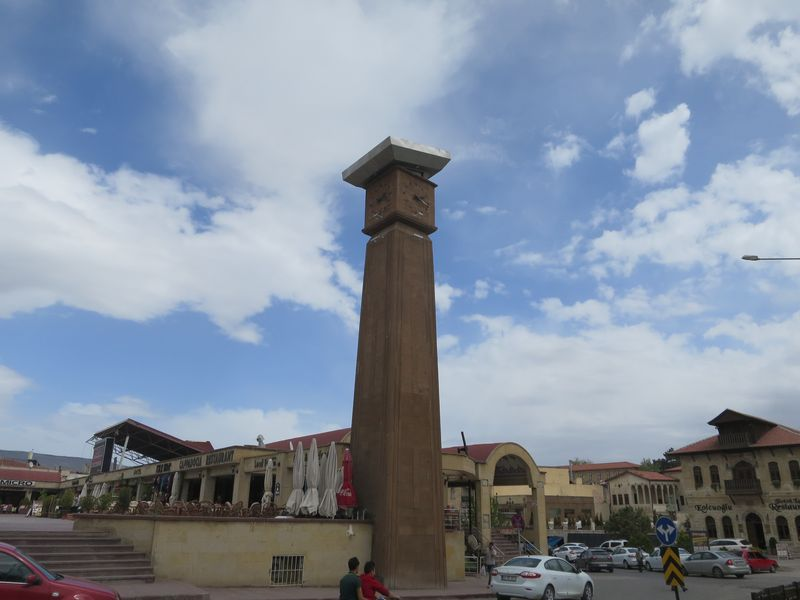
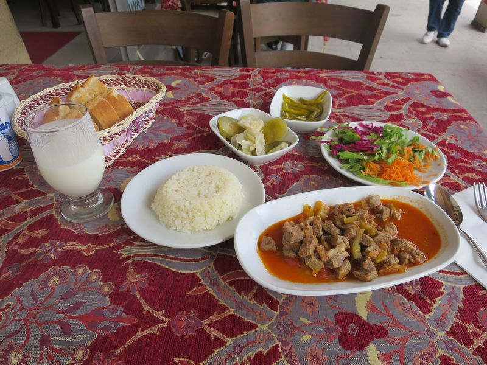
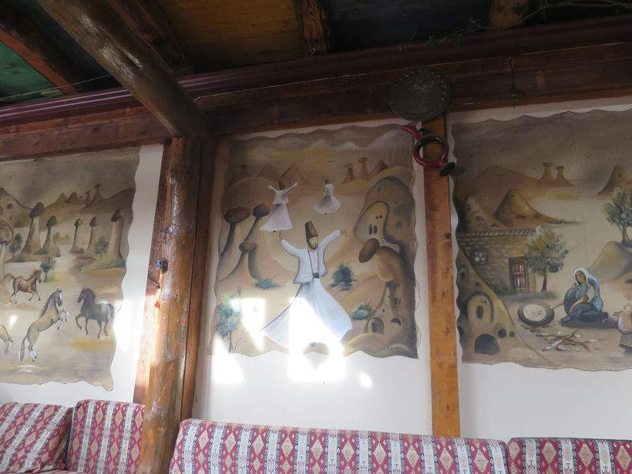
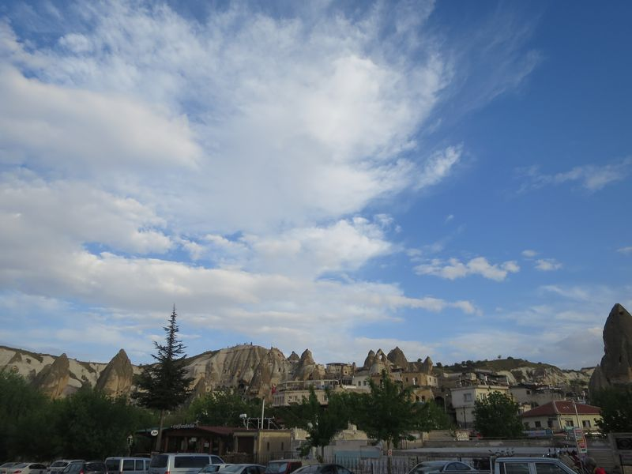
2016 Turkey
❮ Previous
Next ❯